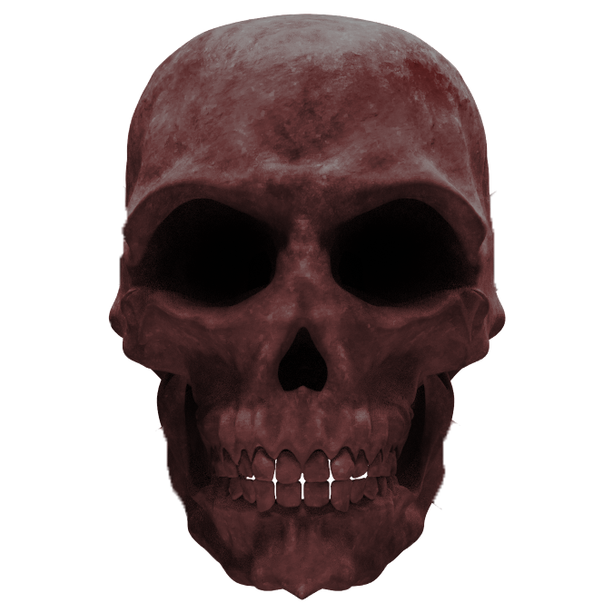
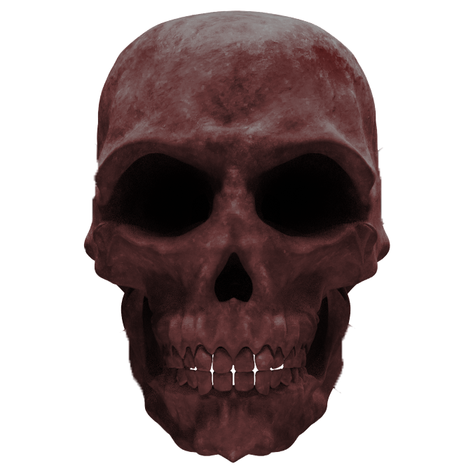

殭屍
源於中國明清民間傳說的一種復活死屍，全身僵硬，指甲發黑尖銳，有銳利犬齒，懼怕陽光，日間躲於棺材、山洞等潮濕陰暗的地方，入夜後出沒，以吸食活人或家畜血液保持行動力，有意識地往人口集中的地方前進，對活物攻擊性強且力大無窮，跳躍前進時雙手向前伸。 據南袁北紀《子不語》及《閱微草堂筆記》所記載，殭屍還有三個別名：移屍、走影、走屍。與中國殭屍相似存在的外國鬼怪，有喪屍。 在香港電影中，最初的殭屍都是身穿清朝官員服飾，因從月亮吸收陰氣，死不瞑目，殭屍因積攢怨氣、人為破壞或墓地風水屬性屍變而形成。 以爪為武器，被抓傷者會感染屍毒死亡，繼而變成另一隻殭屍；於月圓之夜，陰氣增強的時候，力量亦會隨之而增強。